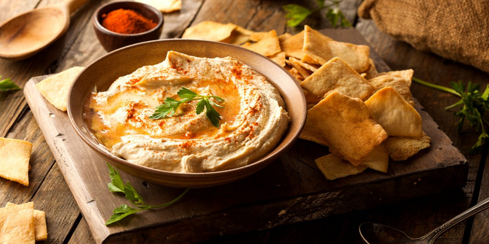
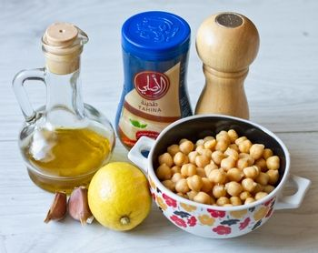
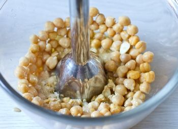
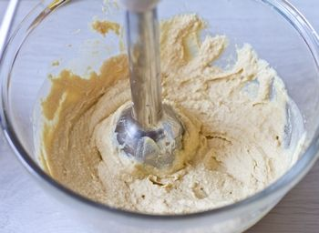
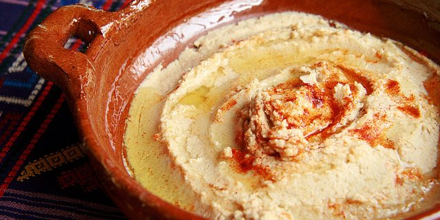

Хумус
Хумус - это широко распространенная в странах Ближнего Востока: в Израиле, Турции, Ливане, а так же в Греции и на Кипре, холодная закуска или густой соус из нута (или как его еще называют бараньего гороха).
Хумус очень вкусный и питательный и и готовится он из пюрированного нута, кунжутной пасты (тахина или тхина), чеснока, оливкового масла, сока лимона, с добавлением зиры и копченой паприки.
Подается хумус в качестве холодной закуски или холодного соуса с лавашем, свежим хлебом, питой, с кукурузными чипсами и т.д.
Эта замечательная закуска получила широкое распространение среди вегетарианцев, тех кто соблюдает посты, а также людей, ведущих здоровый образ жизни.
Хумус богат легкоусвояемым растительным белком (протеинами), большим количеством клетчатки, железом, кальцием и ненасыщенными жирами.
И кроме всего прочего, хумус невероятно вкусная и легкоусвояемая закуска, которая разнообразит ваше меню, сделает вас здоровее, красивее и благодаря этому, чуточку счастливее!
Ингредиенты:
- отваренный нут 300 грамм
- если у вас есть возможность купить консервированный - смело берите, сэкономите уйму времени)
- лимонный сок 2 ст.л.
- (или по вкусу)
- тахина 2 ст.л.
- (кунжутная паста)
- чеснок 2-3 зубчика
- соль по вкусу
- оливковое масло и молотая сладкая паприка для подачи (по желанию)
Рецепт приготовления:
- Если вам негде купить тахину, вы можете сделать ее сами. Для этого перемелите в пасту 100 г слегка поджаренных кунжутных семечек с 3 ст.л. подсолнечного или оливкового масла. 
- Кладем все ингредиенты в миску и перемалываем блендером в пюре 
- По мере необходимости доливаем по столовой ложке воды, чтобы придать нужную консистенцию. Должна получится масса густоты томатной пасты. 
- При необходимости добавляем соли и лимонного сока.
Перед подачей слегка поливаем хумус оливковым маслом и посыпаем паприкой (это действие по желанию, но поверьте, с ним вкуснее).
